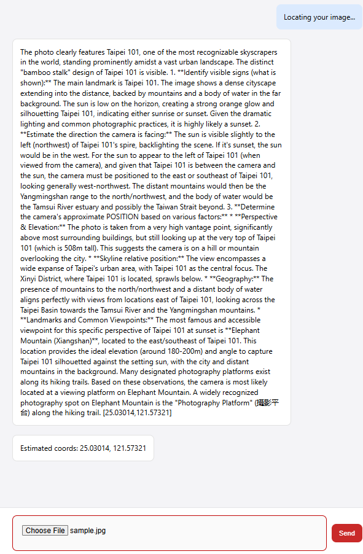

⚙️ How Our Detection Pipeline Works
-
API Setup
We load the Google Gemini API key securely from an
api.env file using
python-dotenv
-
Image Loading
The backend reads the uploaded image as raw bytes:
with open('sample3.jpg', 'rb') as f: image_bytes = f.read().
-
Image Resizing (Performance Boost)
Before sending the image to the AI model, we automatically resize it so the longest side is
1024 pixels.
This makes the image much smaller and faster to process, while still keeping all the important details
the model needs (signs, buildings, trees, colors, etc.).
It also prevents huge images from slowing down the system or causing errors.
-
Multimodal Call to Gemini
We send two things to the Gemini model:
- The raw image bytes as a
types.Part.from_bytes(...)
- The OCR text plus a detailed instruction prompt that tells the model to:
- Analyze landmarks, roads, vegetation, signs, lighting, etc.
- Infer the camera’s position, not just the landmark location.
- Return decimal latitude and longitude in a strict bracket format:
[LATITUDE,LONGITUDE].
-
Coordinate Extraction
From the model’s response (
response.text), we parse the latitude and longitude
using string operations, convert them to floats, and store them as:
Latitude and Longitude.
-
For example, given
The models response is returned:

-
Google Maps Integration
We build a URL like:
https://www.google.com/maps/search/?api=1&query=LAT,LNG
and inject it into a simple HTML container so the user can click and see the predicted location on Google Maps.